AI가 일하고 사람이 결정한다
AI-DLC(AI-Driven Development Life Cycle)는 AWS가 2025년에 내놓은 개발 방법론이다. 지금까지는 사람이 묻고 AI가 답했다. AI-DLC에서는 AI가 계획을 내밀고 질문을 던지며 사람이 답하고 승인한다. 회의실 예약 서비스를 만드는 장면으로 보면 이렇다.
회의실 예약을 Unit 셋으로 나누려 합니다. 카탈로그, 예약, 캘린더 동기화. 취소 마감은 시작 30분 전인가요, 1시간 전인가요?
30분 전으로. 캘린더 동기화는 이번엔 2순위로 미룬다.
예약 Unit을 Bolt 둘로 계획했습니다. 완료는 동시 요청 20개 중 1개만 성공하는 테스트로 판정합니다. 승인할까요?
승인. 잠금 범위는 내가 직접 본다.
이 짧은 대화에 AI-DLC가 다 들어 있다. AI가 의도를 Unit으로 쪼개고 모르는 것은 추측하지 않고 묻는다. 사람은 범위와 우선순위를 정하고 완료 기준을 승인하고 사람만 판단할 수 있는 곳(동시성)을 스스로 맡는다. 이 문서에서 빨간 마름모 승인 지점은 언제나 이렇게 사람이 결정하는 자리다.

한 장 요약
- 무엇정체
- AWS의 Raja SP가 2025년 백서로 정의한 AI 네이티브 개발 방법론. 제품이 아니라 방법론이고 실행 도구는 기존 코딩 에이전트 위에 얹는 오픈소스다.
- 핵심대화의 역전
- AI가 계획하고 묻고 실행한다. 사람은 분기점마다 검증하고 결정하며 최종 책임을 진다.
- 단위Intent · Unit · Bolt
- 의도(Intent)를 독립 배포할 수 있는 Unit으로 쪼개고 Unit을 시간~일 단위의 Bolt로 만든다. Bolt는 스프린트를 대신한다.
- 단계3 → 5
- 개념은 Inception → Construction → Operations. 실행 도구 v2는 Initialization과 Ideation을 더한 5단계 33스테이지이고 일의 크기에 따라 스코프 11종 중 하나를 고른다.
- 의식몹
- Mob Elaboration: 팀이 한 화면을 보며 AI와 요구사항을 정교화한다. Mob Construction: 팀이 함께 설계 결정을 내리고 Bolt를 끝낸다.
- 설계방법론 안에
- 도메인 설계(DDD)와 논리 설계(NFR 패턴 + ADR)가 단계 안에 들어 있다. 설계 문서가 곧 다음 단계 AI의 입력이다.
- 도구aidlc-workflows
- awslabs/aidlc-workflows v2.11.4(2026-11). Claude Code, Kiro, Codex CLI, Cursor, opencode, Copilot에서
/aidlc로 시작한다. - 전제없으면 효과 없음
- 빠른 빌드·테스트, 자동 보안 게이트, 결정 권한을 가진 사람. AI-DLC는 기존 관행을 증폭할 뿐 기반의 결함을 메우지 않는다.
- 맞는 곳과 아닌 곳
- 트레이드오프가 많고 여러 팀이 걸친 시스템, 규제가 있는 조직, 기존 코드에 계속 기능을 얹는 곳. 혼자 하는 짧은 실험이나 한 줄 수정에는 오버헤드다.
다섯 가지만 기억한다면
- 결정을 앞으로 당긴다. Inception의 정제가 Construction의 효율을 정한다. 계획이 오히려 속도를 높인다.
- 계약을 먼저 쓴다. Unit이 둘 이상이면 API와 이벤트 계약을 구현 전에 승인한다. 병렬 개발일수록 중요하다.
- 사람의 주의는 좁고 깊게. AI는 넓고 빠른 초안, 사람은 동시성·트랜잭션 경계·권한·실패 경로·레거시 호환.
- 깊이는 크기와 위험으로 고른다. 모든 일에 전체 절차를 돌리면 문서는 쌓이고 승인은 형식이 된다.
- 모든 것을 저장소에. 결정, 질문과 답, 설계, 승인 기록이 AI의 컨텍스트이자 팀의 기억이다.
읽는 순서
- 01 개념정의, 등장 배경, 10가지 원칙, 핵심 용어, 애자일과의 차이, 맞는 곳과 맞지 않는 곳.
- 02 단계와 실행세 단계의 산출물과 승인 지점,
aidlc-workflowsv1(규칙 파일 복사형)과 v2(엔진 설치형)의 스테이지·질문 파일·승인 게이트. - 03 다른 방법론Spec Kit, Kiro, OpenSpec, BMAD, Claude Code 권장 흐름, RPI, Superpowers, Compound Engineering, Ralph loop, 하네스 엔지니어링을 층으로 나눠 비교.
- 04 사례CJ올리브영(30명, 3일, 과제 5개)과 샐러드랩(4명, 매주 몹), 해설 글들에서 공통으로 나온 성공 조건과 실패 패턴.
- 05 적용기반 점검, 역할, Intent 하나의 흐름, Mob Elaboration 진행법, Bolt 계획, 깊이 고르기, 도입 순서, 이 킷과의 대응.
- 06 설계Intent → EARS 수용 기준 → NFR·위험 → Unit 분해 → 계약 → 도메인 설계 → ADR까지, 회의실 예약 하나로 끝까지.
바로 적용할 생각이라면 05와 06부터 읽고 막히는 용어가 나오면 01의 용어 사전으로 돌아온다.
출처
2026-11-21 기준으로 아래 자료를 끝까지 읽고 정리했다. 수치는 원문 그대로 옮겼고 기대치로 적힌 것은 본문에 그렇게 표시했다.
AWS 공식과 백서
- AWS 기술 블로그, 「AI 주도 개발 라이프사이클: 소프트웨어 엔지니어링의 재구상」
- AI-DLC 화이트페이퍼 한국어본
- IBM Think, 「AI-DLC: AI 기반 개발 라이프사이클」
- Dedicatted, 「From AI-assisted to AI-driven」 (AWS 공식 출판물 아님)
실행 도구
- awslabs/aidlc-workflows (v2
main, v1v1브랜치) - aws-samples/sample-aidlc-decisions-driven-skill
- choseungyoon/aidlc-claude-code-workshop
국내 사례와 해설
- CJ올리브영 AI-DLC 워크숍
- 샐러드랩 Alpha-Town
- 농심 NDS Cloud Tech Blog
- 파이토치 한국 사용자 모임
- 위키독스 『함께해요 바이브 코딩』
- 개발자 조한빈 · sddev · Feccle
다른 방법론
Spec Kit, Kiro, OpenSpec, Tessl, Agent OS, BMAD, Claude Code, HumanLayer, Superpowers, Compound Engineering, Ralph, Anthropic·OpenAI·martinfowler.com의 컨텍스트·하네스 엔지니어링 글, Thoughtworks Technology Radar. 링크는 03장 끝에 있다.